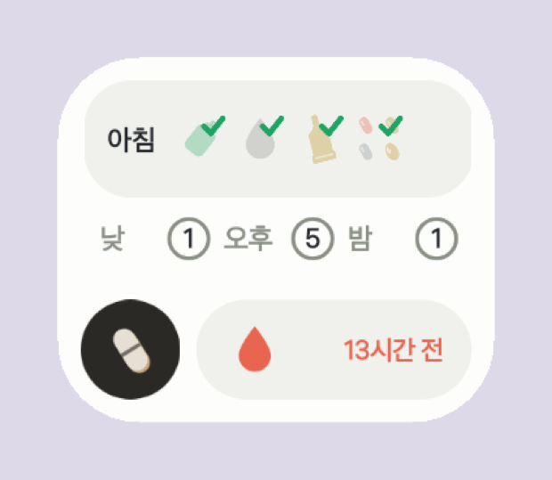

약수첩
먹고 바르고 넣는 약을 홈 화면에서 챙긴다

홈 화면 위젯. 윗줄이 지금 구간의 약, 아랫줄이 나머지 셋 — 다 챙겼으면 체크, 남았으면 개수. 맨 아래 인공눈물 띠는 두 번 누른다. 여기서 보고, 앱에서 누른다.
처음 세 걸음
1약을 넣는다약 목록에서 이름 · 모양 · 색 · 언제
2위젯을 올린다홈 화면에 2칸짜리
3먹고 누른다앱에서 체크, 인공눈물은 띠에서
이럴 때 이렇게
아침에 먹고앱을 열어 아침 카드의 줄을 눌러요. 영양제 넷은 한 번에. 5시 20분이 돼도 알림은 안 와요 — 이미 했으니까.
깜빡했을 때구간 시각에 알림이 하나. 남은 것 이름만 적혀 있고, 먹었어요 를 누르면 그 구간이 통째로 체크돼요. 정해 둔 시간이 지나면 알림은 스스로 사라져요.
인공눈물을 넣고위젯 띠를 두 번. 한 번은 «한 번 더 눌러서 확정», 4초 안에 한 번 더. 간격(기본 60분)이 지나면 물방울이 빨개져요.
잘못 눌렀을 때몇 분 안엔 같은 줄을 다시 눌러요(기본 5분). 지나면 그대로 굳어요 — 잘못 눌렀을 때만 고치라고 두는 시간이에요.
늦게라도타일은 자정까지 눌러 채울 수 있어요. 알림이 사라진 뒤에도요.
토요일 아침일주일치 약통을 채우라는 알림. 매일 챙기는 일이 아니라 위젯엔 안 서요. 채웠어요 를 누르면 기록에 남아요.
아침에 먹고 나서
인공눈물과 타임라인
지난 기록
언제 알릴지
인공눈물과 되돌리기
약 목록
약 하나 고치기
소리 · 진동 · 잠금화면 표시는 안드로이드가 맡아요 — 설정의 «시스템 알림 설정 열기». 기록은 설정 맨 아래에서 CSV 로 내보내요. 갤럭시 S25+ · One UI 8 전용이고 스토어에 안 올려요. 코드는 newhigen-labs/pillbox.